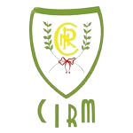

Associação Clube Raia Aventura - ACRA
raiaventura@hotmail.com
Associação Clube Raia Aventura - ACRA
raiaventura@hotmail.com
Rua das Piscinas s/n
6000-776 Castelo Branco
Dirigente Desportivo: Nuno Mateus
06-Coimbra

Clube de Instrução e Recreio Mexilhoeirense - CIRM
arco.e.besta.cirm@gmail.com
Rua Francisco Bivar
8500-132 Mexilhoeira Grande
Dirigente Desportivo: José Leonel Gomes Brás
10-Leiria